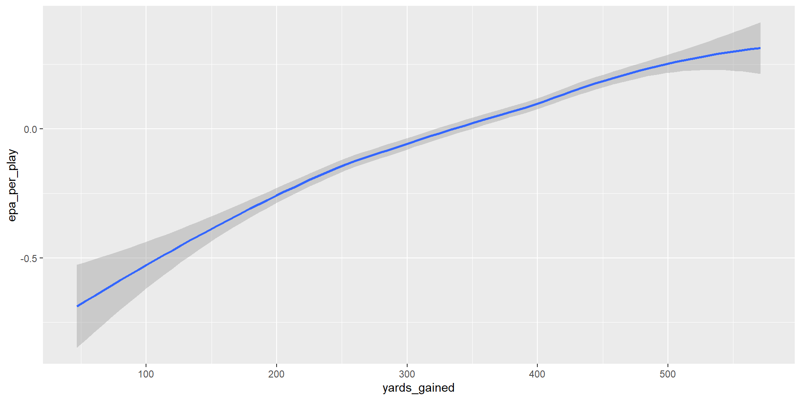
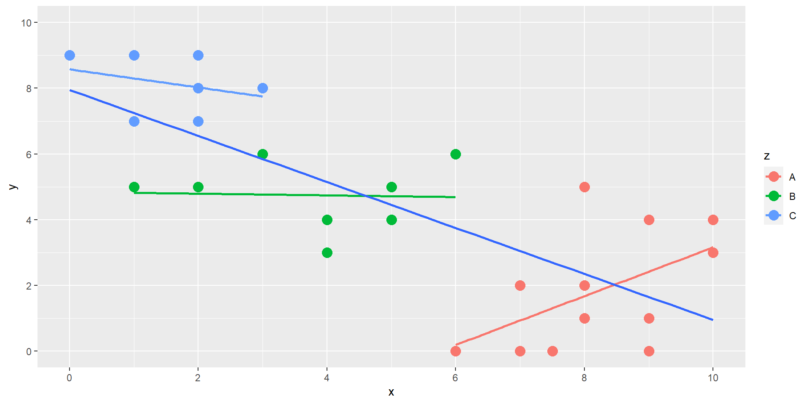
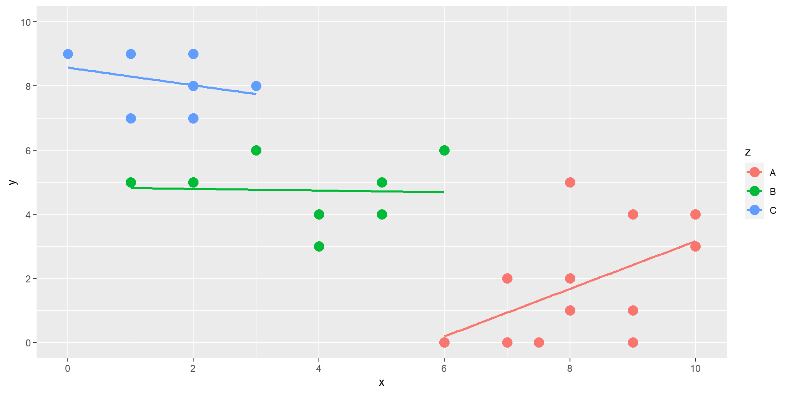
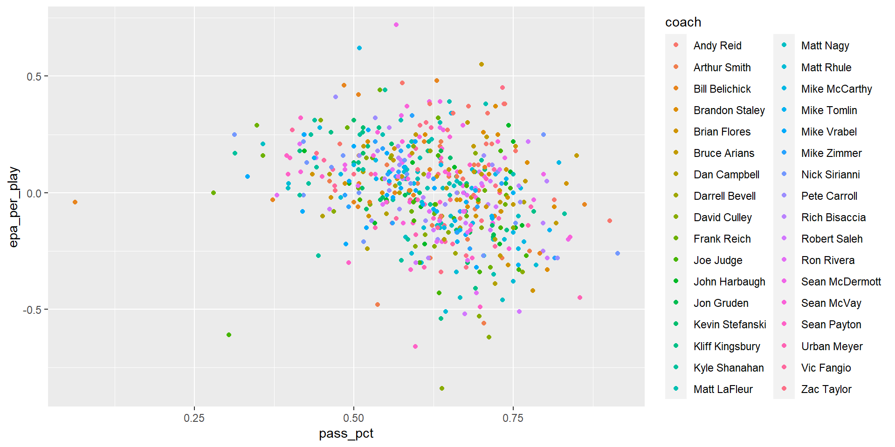
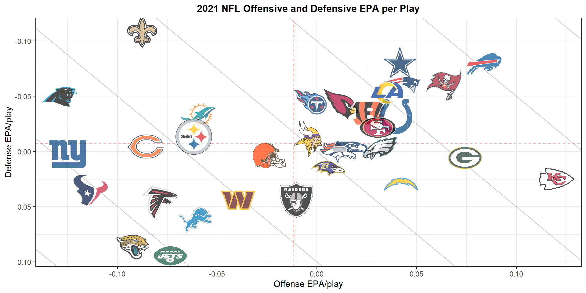
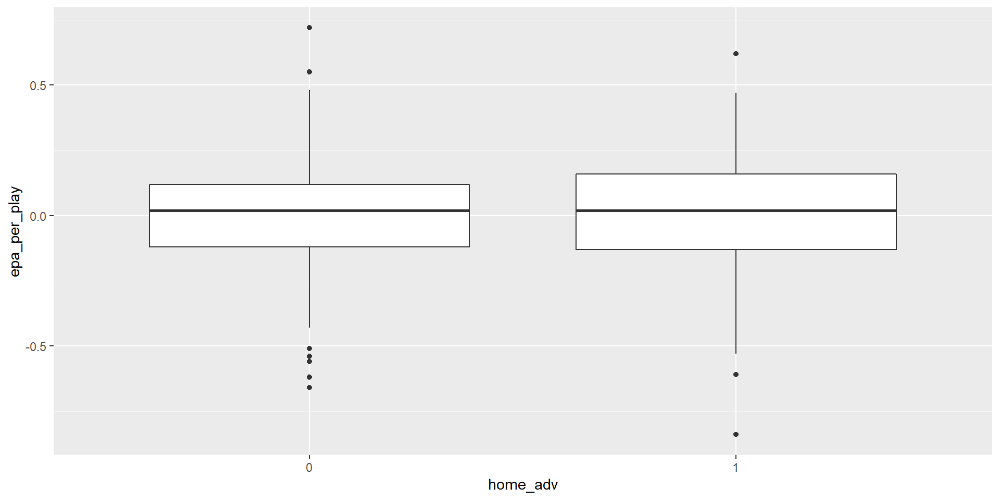
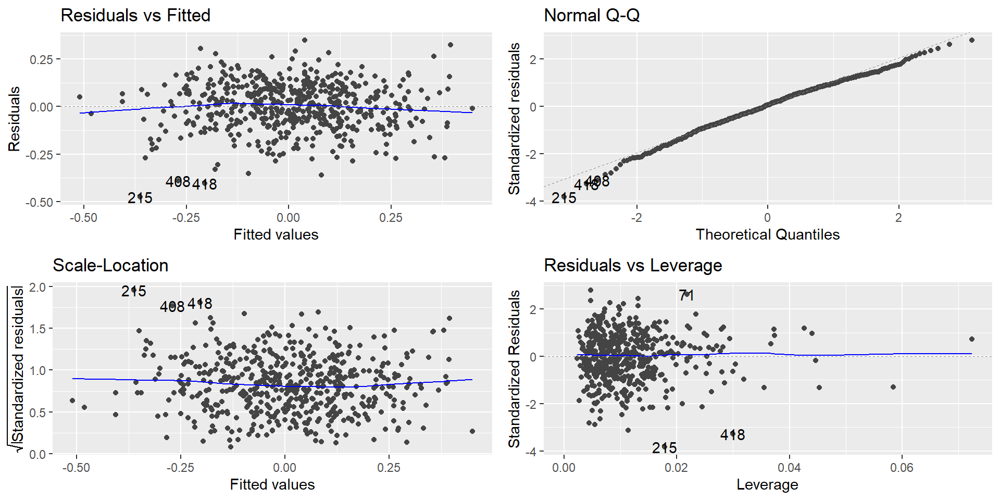

Linear Mixed-Effects Models
Nick Freeland, Bernice Green, Gary Marmon
Introduction
Simple Linear Regressions
assumes independence of observations
slopes and intercepts measure average trends

But…
What if the observations are not independent?
What if trends vary between clusters?
Linear Mixed-Effects Models (LMMs)
- LMMs can be used to model correlated data
Cross sectional data: individuals nested in a geographical or social context - ex: Student test data compared across Geometry classes
Longitudinal data: repeated measures of individuals - ex: Student test data over time
Main application for mixed-effect models is in psychology due to the nature of their data and repeated observations across trial participants
Fixed vs. Random Effects
-Fixed Effects - show average trends for the population - assume constant relationship between response and exploratory features - infer/predict about levels included in the training data
-Random Effects - show how trends vary across groups - assumes constant relationship between response and exploratory features but relationship may vary between groups - infer/predict about all levels in the population
Fixed and Random Effects
mixed-effects models simultaneously model fixed and random effects
fixed effect parameters
- small number of clusters, large number of observations
random effect parameters
- large number of clusters, small number of clusters per observation
It’s important to include the random effects in the model since fixed effects only give a partial picture of hierarchical data.
Linear Model vs Linear Mixed-Effects Model
Overview
Until more recently the only way to handle the type of data mixed-effects model does was through repeated measures ANOVAs. Mixed-effects models are much more versatile in handling variability within and across groups and can handle missing data, providing much better results than the ANOVAs. (Brown 2021)
- Mixed-effects models more versatile with missing data and generally better predictions
Applications
The main application for mixed-effect models is in psychology due to the nature of their data and repeated observations across trial participants. However, the applications can extend into almost any field where the variability across a group/person is desired in the analysis. One such example is the use of mixed-effects models on published health data sets to explore the link between smoking and depression in which it was found “Smoking status is robustly associated with depression (or depressive symptomatology) at 1 ½ to 2 times the risk of nonsmoking across a variety of study designs, depression measurements, and participant populations” (Luger, Suls, and Vander Weg 2014).
- Mixed effects models: regression with variability across groups
Assumptions
The complex nature of mixed-effects models call into question the robustness of these models and brings more focus to the model assumptions. “Mixed-effects models involve complex fitting procedures and make several assumptions, in particular about the distribution of residual and random effects. Violations of these assumptions are common in real datasets, yet it is not always clear how much these violations matter to accurate and unbiased estimation.” (Schielzeth et al. 2020). The study found mixed-effects models to be very robust to violations of these assumptions, finding the estimates were unbiased and missing random effect predictors had little effect on the fixed effect estimates but had some effects on the estimates of random effects.
- Mixed-effects models offer good prediction even if assumptions on distribution are violated
Methods and Data
Data
- We used the nflfastR package which tracks NFL play by play data (372 variables) for every game and features models for Expected Points, Win Probability, and Completion Probability
- We summarized the data on a per game basis and use the following variables in our modeling:
| Variable | Meaning |
|---|---|
| pbp.posteam | the team with possession of the ball (offense) |
| pbp.posteam_type | specifies if the possessing team is home or away |
| pbp.game_id | the specific game id from the NFL |
| week | week number in the season that the game was played |
| season_type | flag that specifies if it is a regular (0) or post (1) season game |
| home_adv | flag that specifies home (0) or away(1) |
| coach | the coach of the team with possession (offensive plays) |
| opp_coach | the coach of the opposing team (defensive plays) |
| plays | total number of rush and pass plays given the team and game |
| pass_plays | number of pass plays ran given the team and game |
| pass_pct | the percentage of pass plays in the game calculated by pass_plays/plays |
| yards_gained | yards gained by an offense |
| shotgun_snaps | number of snaps a team lined up in a shotgun formation |
| ho_huddle_snaps | number of snaps a team used a no huddle offense |
| EPA_per_play | expected points added per play (nflfastr model) |
Expected Points Added (EPA)
Expected points added are predicted for every play. We use this on a per play basis as our response variable
Fixed Variables
EPA per Play by Home Field Advantage
EPA per Play by Coach
- note the variation between coaches (our subjects)
- we must account for this in our model (we do this by adding a random effect)
Methodology
Linear Mixed Models
- Just as a linear model is described by the distribution of a vector-valued random response variable, Y, whose observed value is \(y_{obs}\), a linear mixed model is described by the distribution of two vector-valued random variables: \(Y\), the response, and \(\beta\), the vector of random effects.
Formula
- The linear mixed effects model is represented as:
\[ y_i = X_iβ + Z_ib_i + e_i \]
- Xi is the design matrix of the fixed effects
- β are the coefficients for the fixed effects
- e is the error term
- Note the second design matrix \(Z_i\) and the subject specific random effects \(b_i\)
- These \(b_i\) allow us to model the subject specific means and enable us to capture the marginal dependence among the observations
Our basic model: \[epa = plays + (1+plays|coach)\]
Analysis
LME4 Package
- Extension of the lmer function, which has become the predominant tool in the R language for fitting linear mixed-effect models. (Bates, Maechler & Bolker, 2012)
- As for most model-fitting functions in R, the model is described in an lmer call by a formula, in this case including both fixed- and random-effects terms
- resp ~ FEexpr + (REexpr1|factor1) + (REexpr2|factor2) + …
- (REexpr1 | factor1) and (REexpr2 | factor2), determine both the random-effects model matrix -Each random-effects term is of the form (expr|factor). The expression expr is evaluated as a linear model formula, producing a model matrix following the same rules used in standard R modelling functions (e.g., lm or glm). The expression factor is evaluated as an R factor.
Starting with a simple linear model
epa.lm = lm(epa_per_play ~ pass_pct + plays + yards_gained + shotgun_snaps + no_huddle_snap,
data=team_sum2)
summary(epa.lm)
Call:
lm(formula = epa_per_play ~ pass_pct + plays + yards_gained +
shotgun_snaps + no_huddle_snap, data = team_sum2)
Residuals:
Min 1Q Median 3Q Max
-0.47720 -0.07899 0.00753 0.08871 0.35041
Coefficients:
Estimate Std. Error t value Pr(>|t|)
(Intercept) -6.873e-02 5.403e-02 -1.272 0.204
pass_pct -3.627e-01 5.907e-02 -6.139 1.63e-09 ***
plays -6.159e-03 8.583e-04 -7.176 2.44e-12 ***
yards_gained 2.024e-03 7.539e-05 26.842 < 2e-16 ***
shotgun_snaps 4.161e-04 6.035e-04 0.689 0.491
no_huddle_snap -2.163e-03 8.125e-04 -2.662 0.008 **
---
Signif. codes: 0 '***' 0.001 '**' 0.01 '*' 0.05 '.' 0.1 ' ' 1
Residual standard error: 0.1254 on 530 degrees of freedom
(34 observations deleted due to missingness)
Multiple R-squared: 0.6302, Adjusted R-squared: 0.6267
F-statistic: 180.7 on 5 and 530 DF, p-value: < 2.2e-16- After accounting for the other variables, the number of shotgun snaps an offense runs does not appear to significantly effect epa per play
- Current model explains approximately 63% of the variance in epa per play.
Diagnostics
- a few outliers are present, but the overall fit looks acceptable.
- we will move forward with a linear approach
Linear Mixed Effects Model
- We want to account for a teams coach and if a team has home field advantage as random effects.
# LMM - random intercepts
epa.lmer1 = lmer(epa_per_play ~ pass_pct + plays + yards_gained + no_huddle_snap +
(1|coach) + (1|home_adv), data=team_sum2)
epa.lmer1Linear mixed model fit by REML ['lmerModLmerTest']
Formula: epa_per_play ~ pass_pct + plays + yards_gained + no_huddle_snap +
(1 | coach) + (1 | home_adv)
Data: team_sum2
REML criterion at convergence: -657.5259
Random effects:
Groups Name Std.Dev.
coach (Intercept) 0.02138
home_adv (Intercept) 0.00000
Residual 0.12358
Number of obs: 536, groups: coach, 34; home_adv, 2
Fixed Effects:
(Intercept) pass_pct plays yards_gained no_huddle_snap
-0.065738 -0.360035 -0.005792 0.001993 -0.002185
optimizer (nloptwrap) convergence code: 0 (OK) ; 0 optimizer warnings; 1 lme4 warnings No p-value?
- Unfortunately, p-values for mixed models aren’t as straightforward as they are for the linear model.
- While the null distributions are asymptotically normal, these distributions are not t distributed for finite size samples — nor are the corresponding null distributions of differences in scaled deviances F distributed
Statistical Significance (Liklihood Ratio Test)
# Testing for significance between models with and without home field advantage
epa.lmer2.null = lmer(epa_per_play ~ pass_pct + plays + yards_gained + shotgun_snaps + no_huddle_snap +
(1+pass_pct|coach) + (1+plays|coach) + (1+yards_gained|coach) + (1+shotgun_snaps|coach) + (1+no_huddle_snap|coach), data=team_sum2,
REML=FALSE)
epa.lmer2.full = lmer(epa_per_play ~ home_adv + pass_pct + plays + yards_gained + shotgun_snaps + no_huddle_snap +
(1+home_adv|coach) + (1+pass_pct|coach) + (1+plays|coach) + (1+yards_gained|coach) + (1+shotgun_snaps|coach) + (1+no_huddle_snap|coach), data=team_sum2,
REML=FALSE)
anova(epa.lmer2.full, epa.lmer2.null)Data: team_sum2
Models:
epa.lmer2.null: epa_per_play ~ pass_pct + plays + yards_gained + shotgun_snaps + no_huddle_snap + (1 + pass_pct | coach) + (1 + plays | coach) + (1 + yards_gained | coach) + (1 + shotgun_snaps | coach) + (1 + no_huddle_snap | coach)
epa.lmer2.full: epa_per_play ~ home_adv + pass_pct + plays + yards_gained + shotgun_snaps + no_huddle_snap + (1 + home_adv | coach) + (1 + pass_pct | coach) + (1 + plays | coach) + (1 + yards_gained | coach) + (1 + shotgun_snaps | coach) + (1 + no_huddle_snap | coach)
npar AIC BIC logLik deviance Chisq Df Pr(>Chisq)
epa.lmer2.null 22 -668.99 -574.74 356.50 -712.99
epa.lmer2.full 26 -663.43 -552.04 357.72 -715.43 2.4394 4 0.6555Random Slopes vs Random Intercepts
Random Intercept Model
$coach
(Intercept) pass_pct plays yards_gained no_huddle_snap
Andy Reid -0.04320522 -0.3600351 -0.005791862 0.001992788 -0.002184533
Arthur Smith -0.07545211 -0.3600351 -0.005791862 0.001992788 -0.002184533
Bill Belichick -0.06125237 -0.3600351 -0.005791862 0.001992788 -0.002184533
Brandon Staley -0.05998892 -0.3600351 -0.005791862 0.001992788 -0.002184533
Brian Flores -0.04802109 -0.3600351 -0.005791862 0.001992788 -0.002184533
Bruce Arians -0.04782538 -0.3600351 -0.005791862 0.001992788 -0.002184533
Dan Campbell -0.07769279 -0.3600351 -0.005791862 0.001992788 -0.002184533
Darrell Bevell -0.06463750 -0.3600351 -0.005791862 0.001992788 -0.002184533
David Culley -0.08170016 -0.3600351 -0.005791862 0.001992788 -0.002184533
Frank Reich -0.06182493 -0.3600351 -0.005791862 0.001992788 -0.002184533
Joe Judge -0.06773172 -0.3600351 -0.005791862 0.001992788 -0.002184533
John Harbaugh -0.07460723 -0.3600351 -0.005791862 0.001992788 -0.002184533
Jon Gruden -0.07307754 -0.3600351 -0.005791862 0.001992788 -0.002184533
Kevin Stefanski -0.06918734 -0.3600351 -0.005791862 0.001992788 -0.002184533
Kliff Kingsbury -0.05564862 -0.3600351 -0.005791862 0.001992788 -0.002184533
Kyle Shanahan -0.08706086 -0.3600351 -0.005791862 0.001992788 -0.002184533
Matt LaFleur -0.04161529 -0.3600351 -0.005791862 0.001992788 -0.002184533
Matt Nagy -0.07627911 -0.3600351 -0.005791862 0.001992788 -0.002184533
Matt Rhule -0.07697774 -0.3600351 -0.005791862 0.001992788 -0.002184533
Mike McCarthy -0.06800655 -0.3600351 -0.005791862 0.001992788 -0.002184533
Mike Tomlin -0.05067471 -0.3600351 -0.005791862 0.001992788 -0.002184533
Mike Vrabel -0.06455181 -0.3600351 -0.005791862 0.001992788 -0.002184533
Mike Zimmer -0.07799479 -0.3600351 -0.005791862 0.001992788 -0.002184533
Nick Sirianni -0.06563687 -0.3600351 -0.005791862 0.001992788 -0.002184533
Pete Carroll -0.05485163 -0.3600351 -0.005791862 0.001992788 -0.002184533
Rich Bisaccia -0.07533029 -0.3600351 -0.005791862 0.001992788 -0.002184533
Robert Saleh -0.07004850 -0.3600351 -0.005791862 0.001992788 -0.002184533
Ron Rivera -0.07123896 -0.3600351 -0.005791862 0.001992788 -0.002184533
Sean McDermott -0.04492282 -0.3600351 -0.005791862 0.001992788 -0.002184533
Sean McVay -0.06487735 -0.3600351 -0.005791862 0.001992788 -0.002184533
Sean Payton -0.08293789 -0.3600351 -0.005791862 0.001992788 -0.002184533
Urban Meyer -0.06971178 -0.3600351 -0.005791862 0.001992788 -0.002184533
Vic Fangio -0.06030615 -0.3600351 -0.005791862 0.001992788 -0.002184533
Zac Taylor -0.07022429 -0.3600351 -0.005791862 0.001992788 -0.002184533
$home_adv
(Intercept) pass_pct plays yards_gained no_huddle_snap
0 -0.06573825 -0.3600351 -0.005791862 0.001992788 -0.002184533
1 -0.06573825 -0.3600351 -0.005791862 0.001992788 -0.002184533
attr(,"class")
[1] "coef.mer"- Each coach is assigned a different intercept, but the fixed effects are the same for all coaches.
- This model is called a Random Intercept model; we are accounting for baseline differences in epa per play.
Random Slope Model
- Alternatively, in a Random Slope model, each coach is allowed to have a different intercept, as well as different slopes for the effect of number of plays ran and percentage of pass plays, yards gained etc.
- Note the only difference is the notation for the random effects.
- (1+pass_pct|coach) means we are telling the model to expect differing baseline levels of epa per play (the intercept represented by 1) as well as differing baseline levels of pass_pct
Coefficients
$coach
(Intercept) pass_pct plays yards_gained shotgun_snaps
Andy Reid 0.006728102 -0.3722720 -0.005903043 0.001981324 1.643708e-04
Arthur Smith -0.023457725 -0.4163653 -0.005069429 0.002304498 -3.061528e-04
Bill Belichick -0.140352195 -0.3184948 -0.005569778 0.002082485 2.021416e-03
Brandon Staley -0.033920695 -0.3747068 -0.005216834 0.001901461 9.572888e-04
Brian Flores 0.002506320 -0.3522986 -0.005979379 0.001797215 5.451766e-04
Bruce Arians 0.052625347 -0.3654553 -0.005339229 0.002170506 -2.141573e-03
Dan Campbell -0.032633593 -0.4078123 -0.005069111 0.002024292 3.117033e-04
Darrell Bevell -0.015657333 -0.3896159 -0.004847335 0.002069363 1.089954e-04
David Culley 0.063837649 -0.4540726 -0.005290452 0.002363655 -8.149542e-04
Frank Reich -0.025375148 -0.3901127 -0.004961856 0.001921123 8.116697e-04
Joe Judge -0.178672995 -0.3502147 -0.005309498 0.002136269 2.272439e-03
John Harbaugh -0.085785257 -0.3705963 -0.005485294 0.001687278 2.533594e-04
Jon Gruden -0.065387302 -0.4016475 -0.006154771 0.001682994 -8.681434e-04
Kevin Stefanski -0.068462398 -0.3889952 -0.005997136 0.001684096 4.496838e-04
Kliff Kingsbury 0.051739732 -0.4048163 -0.004771162 0.002124108 2.616412e-03
Kyle Shanahan -0.092695066 -0.4018564 -0.004872697 0.001967280 -7.448583e-04
Matt LaFleur 0.009175643 -0.3892986 -0.006130100 0.001926008 -2.117968e-03
Matt Nagy -0.012257161 -0.4602187 -0.005191404 0.001789964 -2.279178e-04
Matt Rhule -0.027027035 -0.4215012 -0.005008515 0.002083713 7.042946e-04
Mike McCarthy -0.050779149 -0.3789256 -0.006218571 0.001894948 -7.706345e-04
Mike Tomlin -0.000739052 -0.3588243 -0.005649494 0.001647816 -1.357040e-04
Mike Vrabel -0.092176195 -0.3681597 -0.005167046 0.001774901 8.072048e-04
Mike Zimmer -0.044902009 -0.4054232 -0.005807989 0.001576495 6.930357e-04
Nick Sirianni 0.026657081 -0.3971460 -0.006063984 0.001597985 -8.912411e-04
Pete Carroll -0.010958598 -0.3705593 -0.005734104 0.001799123 -8.468388e-04
Rich Bisaccia -0.087976366 -0.3991398 -0.005000101 0.001939447 1.351791e-03
Robert Saleh -0.060129840 -0.3864619 -0.006329958 0.001930776 -4.410997e-04
Ron Rivera -0.014025074 -0.4086765 -0.005228427 0.002043236 -7.844644e-05
Sean McDermott -0.014575366 -0.3530997 -0.006428880 0.002164647 1.196181e-03
Sean McVay -0.080704890 -0.3672137 -0.006432359 0.001839938 1.301721e-04
Sean Payton 0.017636375 -0.4697251 -0.004587776 0.002273799 -1.316270e-03
Urban Meyer -0.098298356 -0.3945568 -0.006070095 0.001652765 -3.788461e-04
Vic Fangio -0.054760804 -0.3936710 -0.005953839 0.001849059 -1.336985e-03
Zac Taylor -0.001455182 -0.4349757 -0.005740040 0.001874798 -2.737028e-03
no_huddle_snap
Andy Reid -0.0058093563
Arthur Smith -0.0058624367
Bill Belichick -0.0048304130
Brandon Staley -0.0044107145
Brian Flores -0.0010453179
Bruce Arians 0.0001820800
Dan Campbell -0.0010163447
Darrell Bevell -0.0032434967
David Culley -0.0036796230
Frank Reich -0.0045399996
Joe Judge 0.0009341072
John Harbaugh 0.0004770374
Jon Gruden -0.0023511710
Kevin Stefanski -0.0028770576
Kliff Kingsbury -0.0035707260
Kyle Shanahan 0.0008943490
Matt LaFleur -0.0067799681
Matt Nagy -0.0071003834
Matt Rhule -0.0034785858
Mike McCarthy -0.0006280615
Mike Tomlin -0.0038637422
Mike Vrabel -0.0070569422
Mike Zimmer -0.0022987409
Nick Sirianni -0.0011921270
Pete Carroll -0.0022896070
Rich Bisaccia -0.0034292690
Robert Saleh -0.0005199952
Ron Rivera -0.0023886547
Sean McDermott -0.0067992828
Sean McVay -0.0042224858
Sean Payton -0.0028031571
Urban Meyer -0.0032220211
Vic Fangio -0.0039772236
Zac Taylor -0.0023049594
attr(,"class")
[1] "coef.mer"- here the model is expecting different baseline levels of plays ran, pass percentage, yards gained, etc.
- despite the individual variation of pass_pct, all the values are negative and very close to each other. We see consistency with how often coaches throw the ball. The variation in number of shotgun snaps an offense runs is much wider.
Conclusion
Using a mixed-effects approach we are able to find the additional effect a subject (a team’s coach in our case) has on a offenses success, measured by epa per play. After accounting for the fixed effects plays ran, percentage of pass plays, yards gained, shotgun snaps, and no huddle snaps, our random effect coefficient for coaching showed an additional change 0.02 epa per play due to coaching and no change in epa per play due to home field advantage.